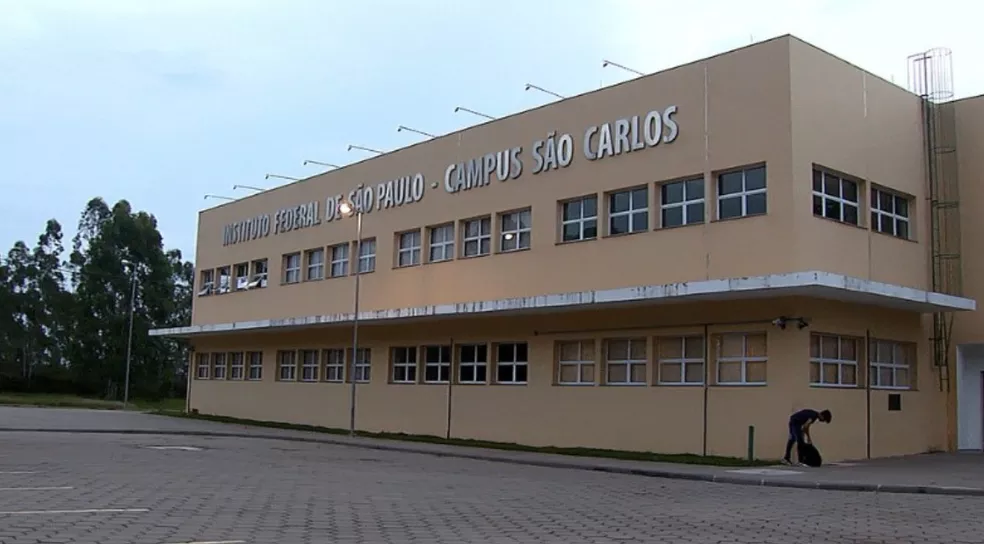

|

Sobre a IFSP - Campus São CarlosTodos os direitos sobre o texto reservados a IFSP - São Carlos - texto escrito pela propria instituição. O câmpus está sediado na cidade de São Carlos - SP e teve autorização de funcionamento através da Portaria nº 1.008, de 29 de outubro de 2007, do MEC. A aula inaugural do curso de Análise e Desenvolvimento de Sistemas - ADS foi proferida pelo Prof. Cleber Silva de Oliveira, da Unidade Guarulhos, no dia 02 de agosto de 2008.Foi estabelecida inicialmente uma parceria para utilização racional de recursos materiais da Universidade Federal de São Carlos (UFSCar), Prefeitura Municipal de São Carlos e o IFSP. Sediado na área de expansão norte da UFSCar, próximo ao Centro de Convenções, o câmpus conta com biblioteca, salas de aula, laboratórios, cantina e um hangar. Primeiras Turmas de cada curso:
Estrutura O Instituto Federal de Educação, Ciência e Tecnologia de São Paulo – IFSP – é uma autarquia federal de ensino. Fundada em 1909, como Escola de Aprendizes Artífices, é reconhecida pela sociedade paulista por sua excelência no ensino público gratuito de qualidade. Durante sua história, recebeu, também, os nomes de Escola Técnica Federal de São Paulo e Centro Federal de Educação Tecnológica de São Paulo. Com a transformação em Instituto, em dezembro de 2008, passou a ter relevância de universidade, destacando-se pela autonomia. Com a mudança, o Instituto Federal de São Paulo passou a destinar 50% das vagas para os cursos técnicos e, no mínimo, 20% das vagas para os cursos de licenciatura, sobretudo nas áreas de Ciências e da Matemática. Complementarmente, continuará oferecendo cursos de formação inicial e continuada, tecnologias, engenharias e pós-graduação. O IFSP é organizado em diversos câmpus e possui mais de 40 mil alunos matriculados nas 37 unidades distribuídas pelo estado de São Paulo. Texto escrito pelo site da IFSP - São Carlos, todos os direitos deste artigo reservado a eles. |